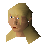

Student

| Config name | student2 |
| NPC id | 617 |
| Combat level | hidden |
| Options | Talk-to |
| Wander range | 5 tiles from spawn |
| Defined in | scripts/quests/quest_itexam/configs/quest_itexam.npc |
Student
A student busily digging.
Show all 4 spawns on the world map → Open in knowledge graph →
Locations
| Area | Coordinates | Level | Count | Map |
|---|---|---|---|---|
| Dig Site | 3348, 3424 | 0 | 1 | view |
| Dig Site | 3358, 3420 | 0 | 1 | view |
| Dig Site | 3364, 3410 | 0 | 1 | view |
| Dig Site | 3367, 3432 | 0 | 1 | view |
Dialogue
PlayerCan you help me with the Earth Sciences exams at all?
StudentI can if you help me...
PlayerHow can I do that?
StudentI have lost my rock sample.
PlayerDo you know where you dropped it?
StudentWell, I was doing a lot of walking that day... Oh yes, that's right - we were studying ceramics in fact, near the edge of the digsite.
StudentI found some pottery that seemed to match the design on those large urns.
StudentI was in the process of checking this out, and when we got back to the centre my rock sample had gone!
PlayerLeave it to me, I'll find it.
StudentOh great! Thanks!
PlayerGuess what I found.
StudentHey! My sample! Thanks ever so much. Let me help you with those questions now.
StudentThe proper health and safety points are: Leather gloves and boots to be worn at all times, proper tools must be used.
PlayerGreat, thanks for your advice.
PlayerHow's the study going?
StudentVery well thanks. Have you found my rock sample yet?
PlayerNo sorry, not yet.
StudentI'm sure it's just outside the digsite somewhere...
StudentHow's it going?
PlayerI am stuck on some more exam questions.
StudentOkay, I'll tell you my latest notes...
StudentThe proper health and safety points are: Leather gloves and boots to be worn at all times, proper tools must be used.
PlayerGreat, thanks for your advice.
StudentHow's it going?
PlayerI am stuck on some more exam questions.
StudentOkay, I'll tell you my latest notes...
StudentFinds handling: Finds must be carefully handled, and gloves worn.
PlayerGreat, thanks for your advice.
PlayerHello there.
StudentWhat, you want more help?
PlayerErr... Yes please!
StudentWell... It's going to cost you...
PlayerOh, well how much?
StudentI'll tell you what I would like: a precious stone. I don't find many of them. My favourites are opals; they are beautiful.
StudentJust like me! Tee hee hee!
PlayerErr... OK I'll see what I can do, but I'm not sure where I'd get one.
StudentWell, I have seen people get them from panning occasionally.
PlayerOK, I'll see what I can turn up for you.
PlayerHello there.
StudentOh, hi again. Did you bring me the opal?
PlayerWould an opal look like this by any chance?
StudentWow, great, you've found one. This will look beautiful set in my necklace. Thanks for that; now I'll tell you what I know...
StudentSample preparation: Samples cleaned and carried only in specimen jars.
PlayerGreat, thanks for your advice.
PlayerI haven't found one yet.
StudentOh well, tell me when you do. Remember that they can be found around the digsite; perhaps try panning the river.
StudentHow's it going?
PlayerI am stuck on some more exam questions.
StudentOkay, I'll tell you my latest notes...
StudentSample preparation: Samples cleaned and carried only in specimen jars.
PlayerGreat, thanks for your advice.
PlayerHello there.
StudentHi there. I'm studying for the Earth Sciences exam.
PlayerInteresting... This exam seems to be a popular one!
StudentUh? That's not mine!
Quests
Referenced in scripts
scripts/quests/quest_itexam/scripts/student3.rs2